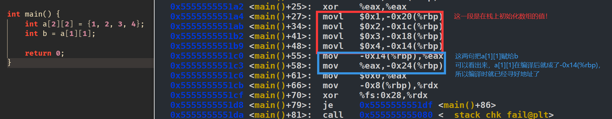
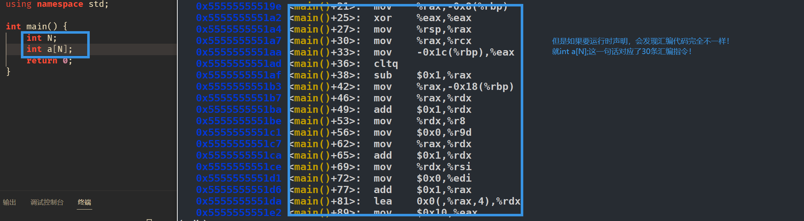
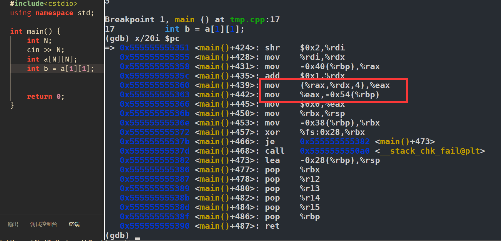
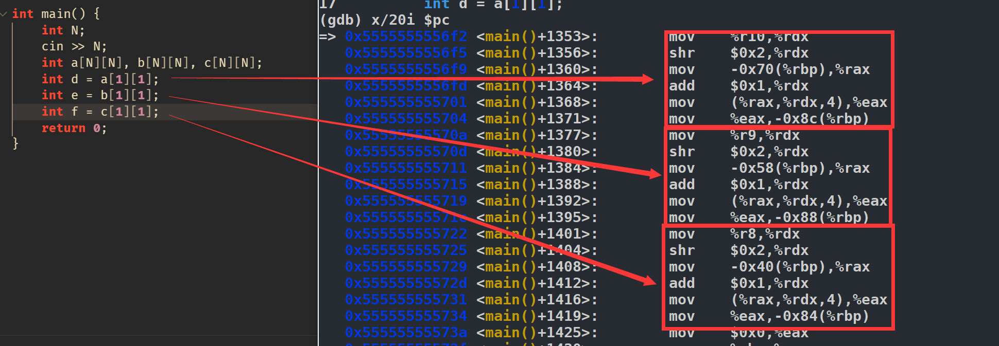
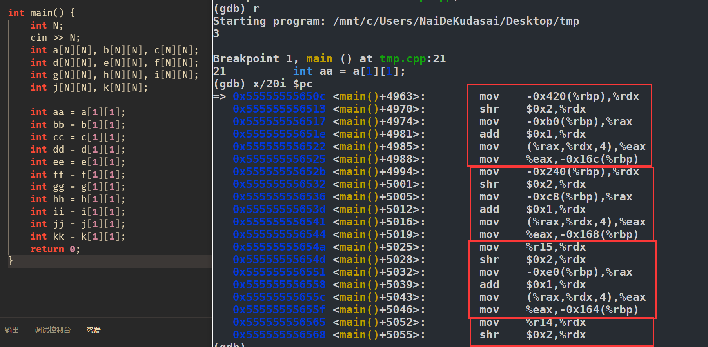

太棒了，我在逐渐理解这一切。
事情是这样子的，给 あの方 做题时，她竟然习惯性用 new 去申请数组。
我觉得很好譬如一维数组就可以：
1 |
|
没有问题，很安全。但是二维数组怎么办呢？可以这样嘛:
1 |
|
不可以！会报错误：
1 |
|
然后我折腾了很久，都没有发现如何用 " new int[a][b]() " 这样来初始化二维数组。
首先给出一些合法的二维数组声明，https://www.geeksforgeeks.org/dynamically-allocate-2d-array-c/ 这里介绍了多种方法如何动态开辟一个二维数组，其中第四种方法 "4) Using double pointer and one malloc call" 比较值得关注。
我这里给出两种比较有代表性的：
1 |
|
第一类我称之为 "使用了一个循环"，第二类我称之为 " 使用了 T arr[N] 语法 "。
最后我发现一个实验性的事实：
我们无法只使用一个 malloc 或一个 new 来动态开辟二维数组，我们至少需要使用一个循环，或者使用 T arr[N] 语法。
而且不要尝试在 int** 和 int[][] （二维数组）间作转换，会有一大堆问题。
譬如我做了如下尝试：
1 |
|
这样手动分配内存。直接 runtime error，寻址不知道寻到哪里去了。
这很好解释，这段代码完全没法得知 F 的行数列数，故逻辑上也无法完成寻址行为。
动态开辟数组时，总得想办法让计算机在 runtime 时知道数组的大小才能完成寻址。
对于一维数组的寻址，比较简单，不需要知道数组大小都可以完成寻址，譬如，但是对于二维数组，就必须要知道第二维的大小才能完成寻址，譬如。
- 那么对于第一类方法，实际上我们开辟了 大小的空间将二维数组转换成了两层一维数组来寻址。先寻第一层，也就是 个 这一层，然后寻到后再寻第二层。这样就转换成了两次一维数组寻址。
- 对于第二类方法是讨论的重点，我们考虑下
int arr[N][M];是怎么实现的：
1 |
|
上面这段代码完全合法，所有变量都声明在 main 函数中，故存储在栈区。
首先这个动态数组是 C++11 以后的一个 optional feature，gcc 是可以编译的，不知道其他编译器。
首先我们看两个例子：


用 gdb 观察汇编代码，可以发现如果数组大小是固定的静态数组，那么寻址的话实际上在编译时就完成了，汇编代码中直接体现了寻址结果。
但是如果是动态开辟数组，光声明 int a[N] 这一行，就对应了 30 多行汇编代码。说明编译器在帮忙做很多额外工作。
那么我们看一下对数组访问时会怎样:

红框部分的汇编就是赋值语句，其中 int b 存放在 -0x54(%rbp) 的栈区。可以看到，寻址 a[1][1] 时使用了 %rax , %rdx 两个寄存器！其中， %rax 存放了基址（ a 的地址） %rdx 存放的就是包含了数组的大小信息。
所以我们得到经验，应该重点关注寻址时， %rdx 寄存器的值是从哪来的。
再看一个例子：

其中三条赋值语句对应了三段汇编代码。
可以清楚地看到，在寻址前，总会有类似 mov %r10, %rdx 这种操作！可以说，a 数组的大小信息存放在 % r10 中，b 数组的大小信息存放在 % r9 中，c 数组的大小信息存放在 % r8 中。
这样我们好像找到了一点端倪，计算机确实在运行时可以获得数组的大小信息，每个数组的大小信息存放在一个寄存器中（大小信息等价于寻址需要的必须信息）。
但是寄存器毕竟是有限的，那我如果开很多数组怎么办呢？试验一下：

可以看到， %rdx 的值当数组很多时，就会从栈中读取！然后后续的 %rdx 仍是从通用寄存器中读取。
这充分说明了：栈区上存储了动态开辟数组的大小信息。当需要访问数组，需要寻址时，就会从栈区和通用寄存器中读取数组的大小信息，故就可以完成动态数组寻址了。√
最后，如果非要开高维的动态数组，还是推荐上面的两种方法。要么就一层一层来：
1 |
|
要么就直接用编译器帮忙实现的语法糖：
1 |
|
但是注意第二种方法效率会低若干倍，在声明和访问时都会需要更多的访存操作。